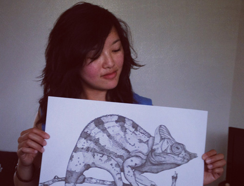

She is an Amsterdam based artist born in 1984; her style is rather unique, she defines art in less abstract way [with an intriguing style] that combines both left and right hemisphere part of the brain. Graduated in 2010 in Communication and Multimedia Design, she later decided to pursue her childhood dream to be an artist instead.
Amazed by her works, I approached her in person for an interview session. Below is an article I wrote as a result of chilling together on her couch, for a little over fifty minutes, at her cozy apartment in Amsterdam.

Fig 1: Pris Roos
~ Introducing, Pris Roos ~
Note: The interview was done on Sunday afternoon, mid June 2012. Being in her workspace was something really inspiring, motivating yet warm; it is part of the living room with a lot of drawings on the wall and a bookshelve that seems to be attached naturally as part of the workspace. We talked about her quick history, inspirations, and goals in the future. Here is how things started:
Born in a business family, things didn't start too smooth for her: "I always wanted to be an artist since when I was a kid, but my parents didn't support me - they didn't really see the future of it". Not only that, she admitted that she got distracted during her puberty. "Boys and my look was way more important back then" she jestingly said. With that, her destined passion was on hold for several years.
Fast forward, in 2011 she finally committed to draw and dedicate herself as an artist; she learns to believe that people will be whoever they are gonna be despite their surroundings. One interesting discussion we touched was about the necessity of education, Pris wishes that she went to art school - unfortunately she did not, however she affirmed: "That shouldn't discourage anyone to stop doing what they are passionate about".
~ Growing & Inspiration ~
Her key to develop so fast is no shortcut, she draws a lot. Like a lot. She aims perfection with persistency and hard work. "It's all about doing it", she said. Being an autodidact artist, Pris started her style with lack of basic skills - such as proportion and perspective, deciphering shadow, highlights, and gradations of tone. This was something crucial that she needs to catch up, luckily she manages to handle this by itensively educating herself with books, going to several art workshops, and interchange informations with fellow artists.
No doubt, one of the biggest challenges to grow as an artist is to find inspirations; I got curious and asked her directly about her opinion in finding inspirations. "Inspiration comes from everywhere - if you define yourself as an artist and having an excuse such as 'I am not inspired yet...' then go out and find your inspirations". With this as a subject, Pris recommended one of her favorite books called "The Creative Habit: Learn It and Use It for Life" by Twyla Tharp. She also added "Do what you are afraid of doing" that's one of her mottos in gaining more skills.
WorkspaceExhibitionRhino
~ Future projects ~
Pris is currently working on her summer collection called "The Big Five". The concept is to draw five most difficult animals in Africa to hunt on foot - her goal is to rise awareness to the people. She is also having a goal to find several galleries to exhibit her artworks. Her latest exhibition's happening on Sunday, July 29th 2012 at Walls Gallery in Amsterdam.